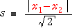

| variance = (écart-type)2 = |
|---|
Variance
Le carré de l'écart-type est appelée la variance des données.
| variance = (écart-type)2 = |
|---|
Depuis la variance est une sorte de moyenne des différences au carré de la moyenne de l'échantillon, les unités de la variance sont les carrés des parts de la valeur originale. Par exemple, si les valeurs sont les poids en kg, la variance est un nombre de kg carré. La déviation standard a les mêmes unités que les valeurs d'origine (par exemple, il est un certain nombre de kg dans l'exemple ci-dessus), alors la valeur numérique de l'écart type est facile à comprendre. L'utilisation de la variance comme un résumé de propagation est donc déconseillée.
Cependant des écarts jouent un rôle central dans plus de méthodes statistiques avancées. En effet, une importante collection de méthodes d'analyse des relations entre les variables est appelé analyse de variance. (Analyse de variance enquête sur les causes de la variabilité dans une mesure — une certaine variabilité peut être expliquée, et peut-être contrôlé, en termes d'autres variables que d'autres aspects de la variabilité sont inexpliqués.)
Les degrés de liberté (en option)
Le diviseur (n - 1) dans la formule de l'écart type d'échantillon est appelé ses degrés de liberté. Cela peut être considéré comme le nombre de «morceaux d'information indépendantes» qui y contribuent.
